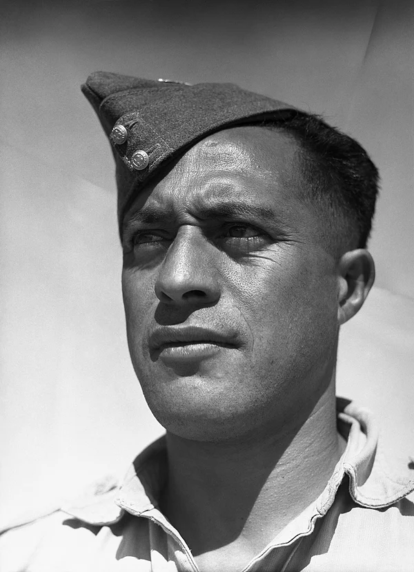
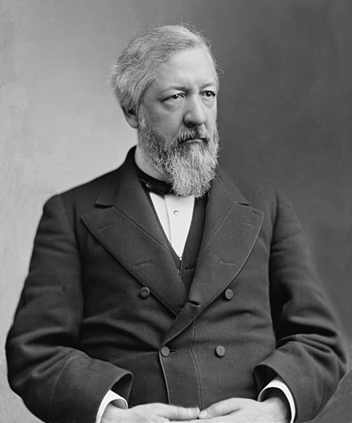
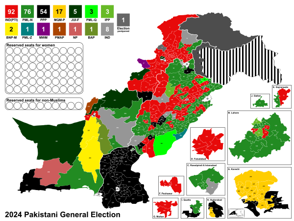
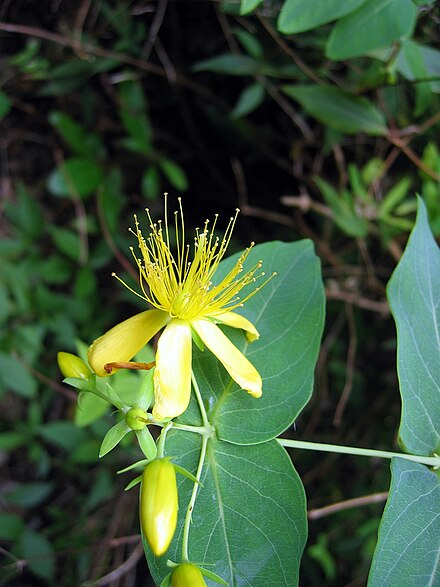

Haane Manahi (1913–1986) was a New Zealand Māori soldier who served in the Second World War with the Māori Battalion. He joined the battalion in 1939 and fought in the German invasion of Greece, the Battle of Crete and the North African campaign. In April 1943, during the Tunisian campaign, his gallantry in an action at Takrouna resulted in a recommendation, supported by four generals, that he be awarded the Victoria Cross. This was downgraded to an award of the Distinguished Conduct Medal, which disappointed many of his fellow soldiers. After his death in a car crash in 1986, representations were made for a posthumous award of the Victoria Cross for his valour at Takrouna. These representations were unsuccessful but eventually resulted in a special award in 2007 of an altar cloth for use in a local church, a ceremonial sword, and a personal letter from Queen Elizabeth II in recognition of his gallantry. This June 1943 photograph of Manahi was taken in Maadi, Egypt, by George Robert Bull, the official photographer of the New Zealand armed forces.
photo by George Rober Bull; restored by Adam Cuerden learn moreWelcome to Wikipedia
The Free Encyclopedia That Everyone Can Edit
6,789,679 articles in English
Featured Image

Featured Articles

James G. Blaine
James G. Blaine (1830–1893) was an American statesman and Republican politician who represented Maine in the U.S. House of Representatives from 1863 to 1876, serving as Speaker of the House from 1869 to 1875, and then in the Senate from 1876 to 1881.
learn more

New Prime Minister of Pakistan
Following the general election, Shehbaz Sharif (pictured) is appointed Prime Minister of Pakistan, forming a coalition government between the PML-N and the PPP.
learn morePrime Minister of Canada
Former Prime Minister of Canada Brian Mulroney dies at the age of 84. Following the general election, Feleti Teo is appointed Prime Minister of Tuvalu.
learn more
Ready to be Involved?
Explore the expansive branches of Wikipedia to find the inormation you want or to submit an article with your expertise
Did you know?
In Stieler's portrait of Beethoven, the composer's arms "are not convincingly attached to his shoulders"
learn moreFumiya Takahashi was referred to as "the most handsome highschooler in Japan"
learn more
